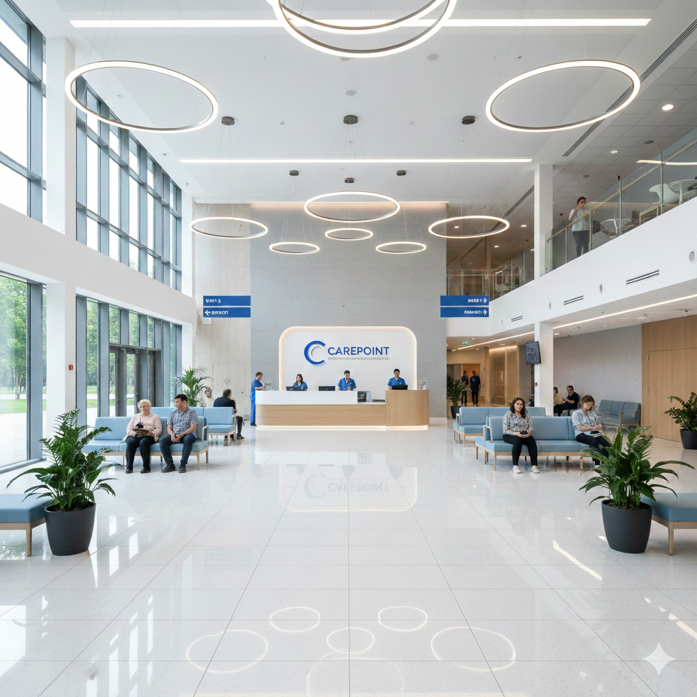

CarePoint u themelua në vitin 2009 me një vizion të qartë: të ofrojmë kujdes mjekësor të cilësisë së lartë për të gjithë qytetarët e Kosovës.
Nga një klinikë e vogël me 10 punonjës, sot CarePoint është shndërruar në një nga spitalet më moderne dhe të pajisura mirë në rajon, me mbi 200 punonjës dhe 50 doktorë specialistë.
Gjatë viteve, kemi investuar vazhdimisht në teknologjinë më të fundit mjekësore dhe trajnimin e stafit tonë. Kjo na ka mundësuar të ofrojmë shërbime mjekësore që konkurrojnë me standardet evropiane më të larta.
Në vitin 2023, u zgjeruam me një ndërtesë të re spitalore me 50 shtretër shtesë, duke u bërë spitali më i madh privat në Kosovë me kapacitet të plotë shërbimi 24/7.
